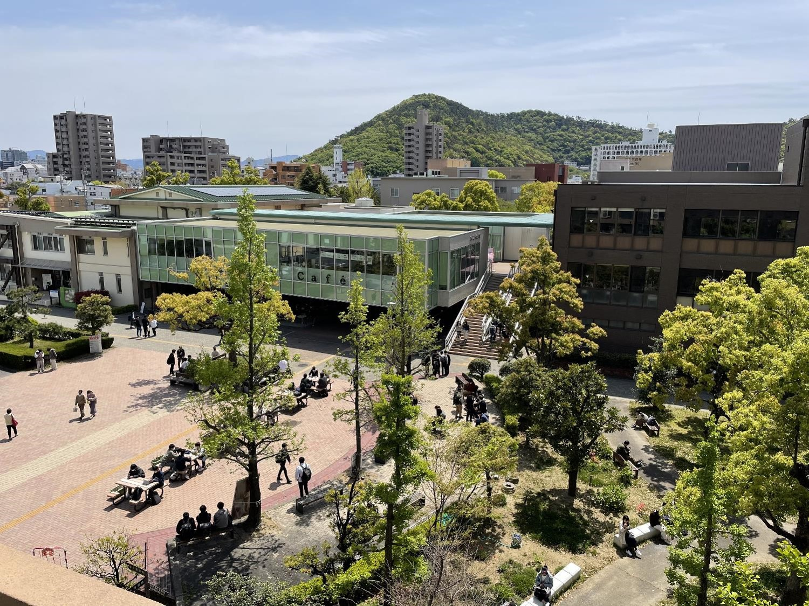

# アクセス
# 住所
香川大学創造工学部創造工学科造形・メディアデザインコース
- 郵便物：〒760-8521 香川県高松市幸町1-1 幸町キャンパス交流棟4F創造工学部事務分室
- 教員研究室：幸町キャンパス北5号館４Fエレベータをでて左すぐ 北村研究室
- 学生研究室：幸町キャンパス北5号館３Fエレベータからの通路をでて右奥の階段右の部屋 メディアデザインスタジオ
# キャンパスマップ
香川大学幸町キャンパス案内 (opens new window)